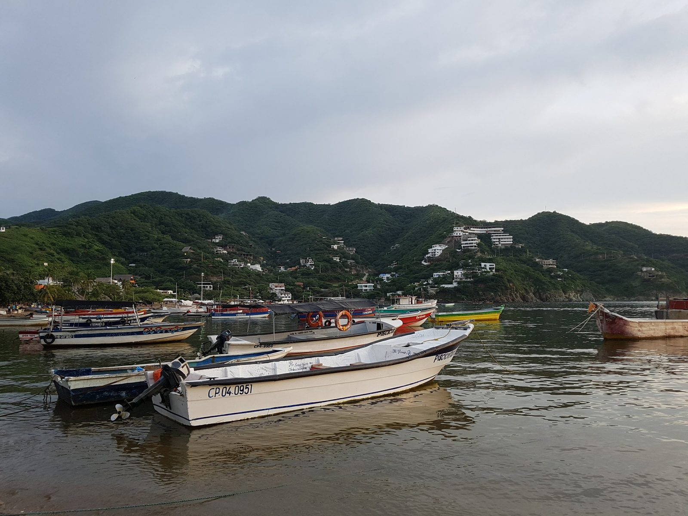
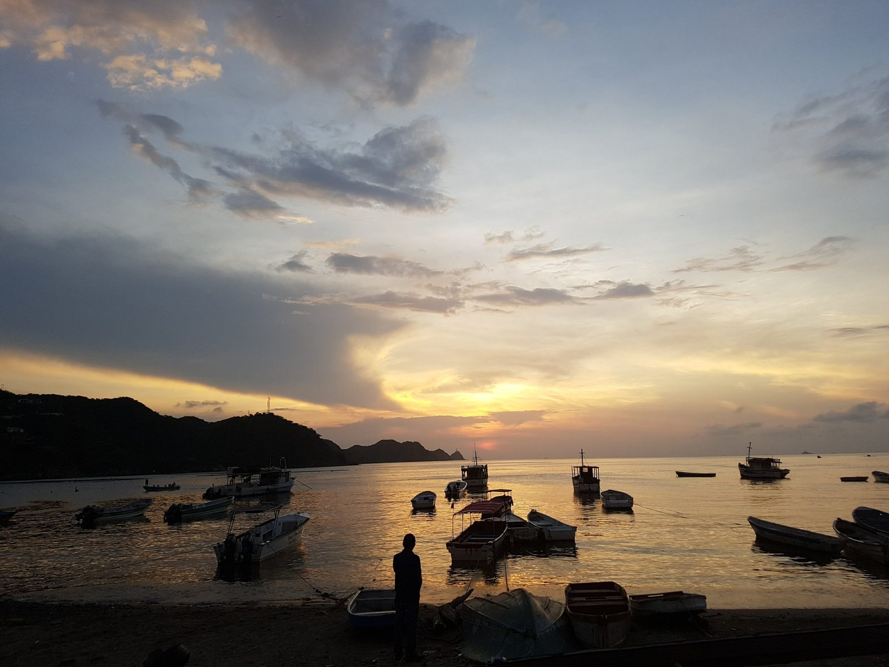
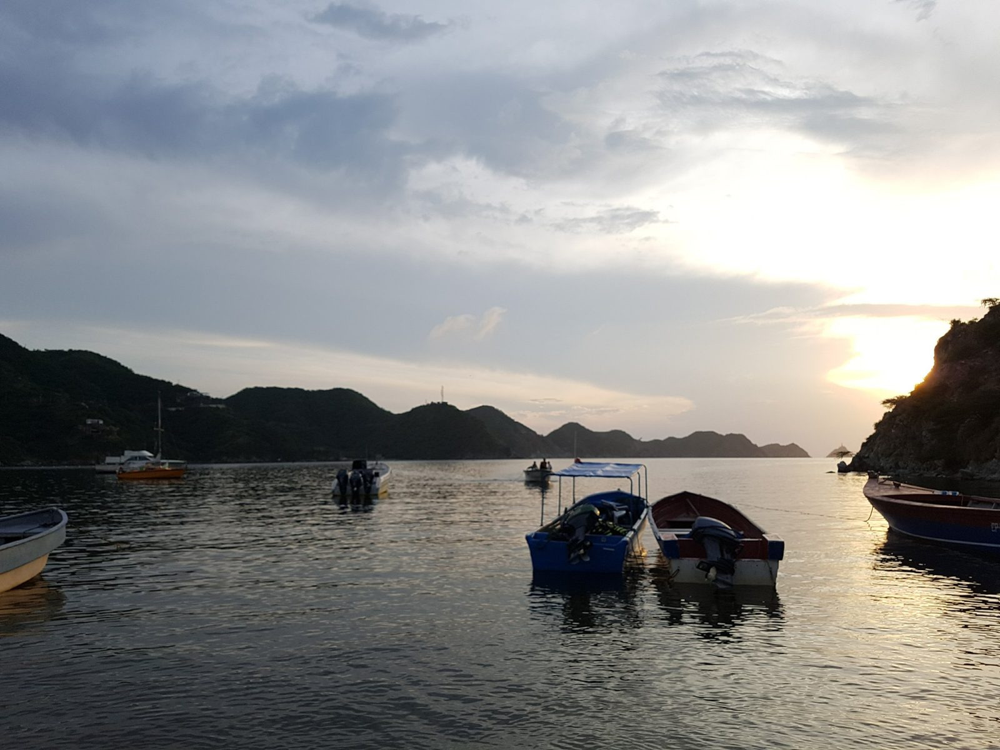

South America · Colombia · Taganga
Taganga, November 2017
From Bogotá I went to the Caribbean coast, near Santa Marta, and stayed in Taganga, a fishing village a few minutes from the city. I slept at Benjamin Hostel, and I came back to Taganga later in the trip. This chapter is short, because I have photos from only one evening.
My conclusion up front: Taganga is a good place to land after a big city. It is small, it faces the sea, and the boats do the work. I do not remember how I got there from Bogotá, what I paid, or how many nights I stayed, and I did not write it down.
The times are my phone's clock, and Google Photos stores them in Colombian time (GMT-5). The boxes hold research I did in November 2026, each with a source and a date, so you can tell it apart from what I remember.
The hostel and the bay
On Thursday, November 23, I slept at Benjamin Hostel in Taganga, a small fishing village a few minutes from Santa Marta. I do not remember how I got there from Bogotá, what I paid, or how many nights I stayed. I only have photos of the bay, taken between 17:07 and 17:26, near sunset: wooden fishing boats pulled up on a dark beach, small boats at anchor, and green hills with white buildings climbing up the slope.






What I found: Hostelworld still lists Benjamin Taganga at Calle 8a A1-43, in front of the sea. The listing describes air-conditioned rooms with private bathrooms and hot water, an on-site diving school and a restaurant, with free Wi-Fi, a 24-hour front desk, a tours desk and luggage storage. Breakfast is not included (Hostelworld).
What I did not find: a bed price, a score for the hostel itself (the page shows only a 6.8 for the town of Taganga, from 80 reviews), and any sign that it is open today. A listing that is still online does not mean the place is open.
I do not remember what I did in Taganga on the 24th, so I leave it out.
What I do not remember
I do not remember how I got from Bogotá to Taganga, what I paid for the hostel, how many nights I stayed or what I ate. I have no photos from the 24th. The next chapter is Tayrona National Park, where I walked in on the 25th.